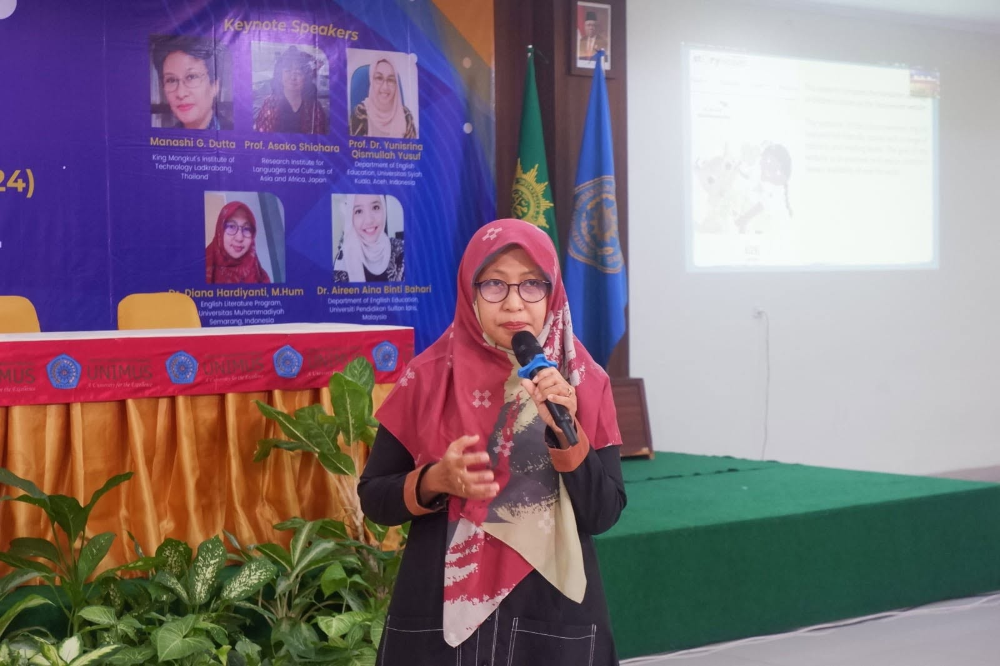

Portal Layanan Bahasa
MLC UNIMUS — Pusat Layanan Bahasa Kampus
Akses cepat tes bahasa, pelatihan, penerjemahan, dan layanan pendukung kebahasaan untuk sivitas akademika UNIMUS dan mitra institusi.
Layanan yang Sering Dibutuhkan
Pilih layanan dan langsung menuju halaman atau sistem yang Anda perlukan.
Daftar PTEL
Pendaftaran tes Proficiency Test of English Language via SIM MLC.
Buka SIM MLC →Jadwal PTEL & Remidi
Cek jadwal tes PTEL dan remidi terbaru.
Lihat jadwal →Daftar EPC
Pendaftaran English Proficiency Course melalui SIM MLC.
Buka SIM MLC →Panduan SIM MLC
Panduan pendaftaran dan pemesanan kegiatan di SIM.
Baca panduan →Translation Service
Layanan penerjemahan dokumen akademik dan institusi.
Info layanan →Interpreter Service
Pendampingan interpreter untuk kegiatan kampus.
Info layanan →Layanan Utama MLC UNIMUS
Layanan inti untuk kebutuhan akademik, administratif, dan institusional Anda.
PTEL
Tes kemampuan Bahasa Inggris berbasis TOEFL untuk kebutuhan akademik, sertifikasi, dan administrasi kampus.
Pelajari PTEL →EPC
Program kursus intensif Bahasa Inggris sebagai persiapan mengikuti Proficiency Test of English Language.
Pelajari EPC →Translation
Layanan penerjemahan dokumen akademik, administrasi, dan kebutuhan kelembagaan secara profesional.
Pelajari Translation →Interpreter
Layanan pendampingan interpreter untuk kegiatan akademik, kerja sama, kunjungan, dan acara institusional.
Pelajari Interpreter →Panduan Cepat SIM MLC
Empat langkah singkat pendaftaran melalui Sistem Informasi Manajemen MLC.
Daftar Akun
Buat akun di SIM MLC — cukup sekali untuk semua kegiatan.
Pilih Kegiatan
Pilih PTEL, EPC, atau layanan lain lewat menu Pesan Kegiatan.
Lakukan Pembayaran
Bayar sesuai tagihan; validasi dilakukan otomatis oleh sistem.
Unduh Kartu Peserta
Unduh kartu peserta setelah pembayaran tervalidasi.
Sambutan Kepala UPT Bahasa Asing

Dr. Diana Hardiyanti, M.Hum.
Kepala UPT Bahasa Asing UNIMUS
Berita Terbaru
Kegiatan, kerja sama, dan informasi terbaru dari MLC UNIMUS.
Pengumuman Terbaru
Informasi resmi jadwal, layanan, dan kegiatan MLC UNIMUS.
Hubungi MLC UNIMUS
Tim admin siap membantu pendaftaran, informasi layanan, dan kerja sama institusi.
Formulir KontakUniversitas Muhammadiyah Semarang, Semarang, Jawa Tengah
Senin – Jumat, 08.00 – 16.00 WIB